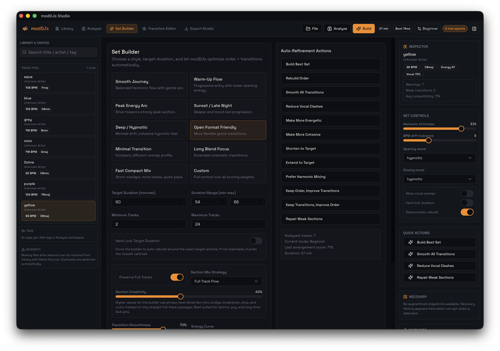

Library
Import, relink, sort, tag, and clean the project pool before arrangement work begins.
 Workspace Manual
Workspace ManualWorkspace map
modDJs is meant to read like a composition environment. Each workspace exists to move the same project toward a more coherent set.
Import, relink, sort, tag, and clean the project pool before arrangement work begins.
Inspect confidence, section maps, phrase fingerprints, texture motion, and recall opportunities.
Choose duration, energy curve, overlap character, and let the engine rebuild the set.
Control overlap windows, transition styles, Start Here, snapshot reminders, and segment pool placement.
Choose render format, mastering profile, compare results, reveal outputs, and audit history.
| Area | Control | Purpose |
|---|---|---|
| Top bar | Files / Folder | Import sources without leaving the project context. |
| Top bar | Analyze | Refresh analysis after import or corrections. |
| Top bar | Build | Run arrangement generation using current set builder settings. |
| Top bar | Beginner / Pro | Collapse or reveal deeper controls depending on the session. |
| Right panel | Quick Actions | One-click rebuilds like Smooth All, Reduce Vocal Clashes, Repair Weak Sections. |

The app works best when you resist the urge to micro-edit too early. Strong source hygiene and strong analysis create cleaner recalls, smoother transitions, and fewer export surprises.